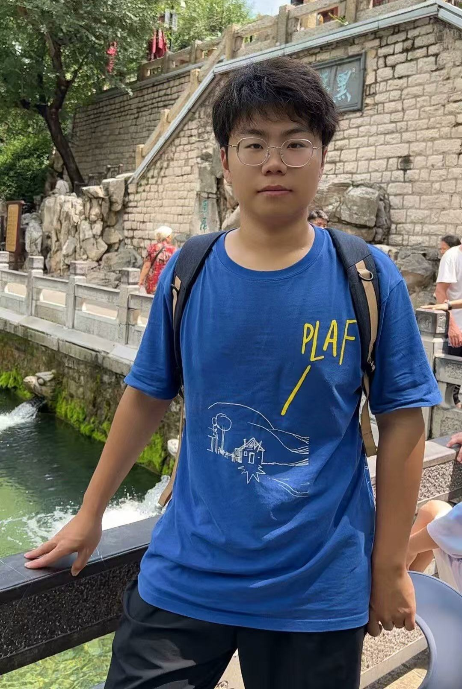

Students
Ph.D
| 陈晨 Research Interests: Learning-based Control, Phase Theory |
 李润坤 Research Interests: Privacy Analysis in Cyber-Physical Systems |
王云龙 Research Interests: Robotic arm collaboration, Imitation Learning |
Master
 马驭 Research Interests: Crosising Optimization and Control |